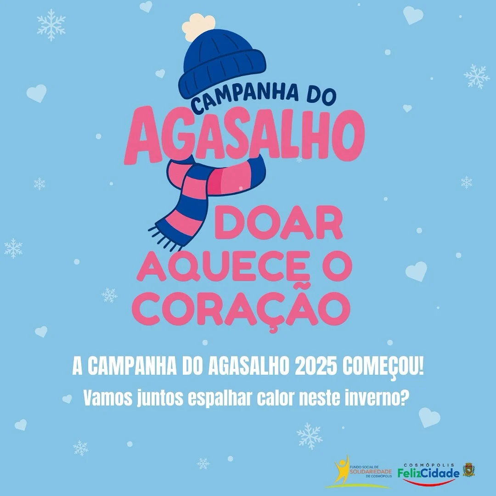

Início
Bem-vindo ao site da nossa ONG. Nossa missão é arrecadar agasalhos, roupas e cobertores para ajudar pessoas em situação de vulnerabilidade durante os períodos de frio.
Aqui você poderá conhecer nossas ações, descobrir como realizar uma doação e também saber como se tornar um voluntário da nossa campanha.

Sobre a ONG
Nossa ONG realiza campanhas de arrecadação de agasalhos, roupas e cobertores para serem destinados a pessoas e famílias que enfrentam dificuldades durante o período de frio.
Nossa missão
Nossos objetivos
Informações
Nossa campanha recebe doações de agasalhos, roupas de frio e cobertores em boas condições de uso. As doações são organizadas e destinadas às pessoas que mais precisam.

Como fazer uma doação
Separe roupas, agasalhos ou cobertores que estejam em boas condições de uso e entre em contato com a ONG para saber como realizar a entrega.
Seja um voluntário
Você também pode contribuir com seu tempo participando da organização, arrecadação e distribuição dos agasalhos.
Contato
Para realizar uma doação, tirar dúvidas ou participar como voluntário, entre em contato conosco pelos dados abaixo.
Telefone: (11) 99999-9999
E-mail: contato@ongagasalho.com